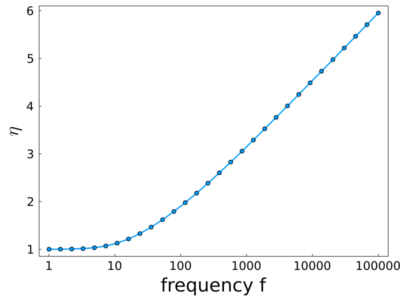
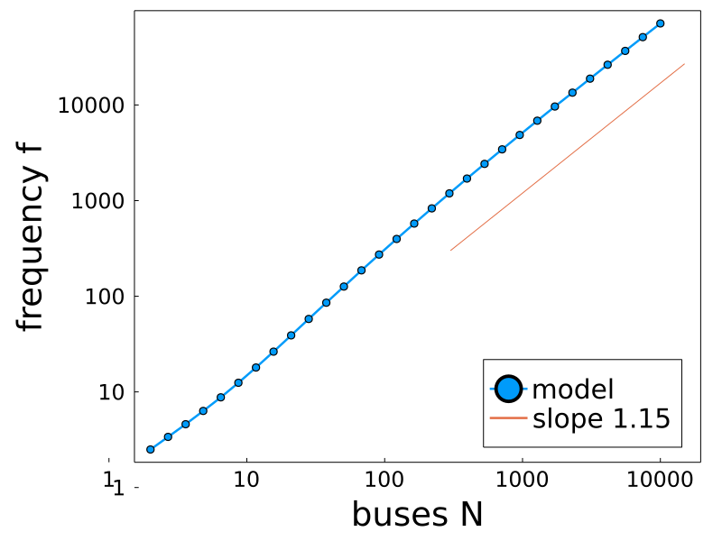

Ride Pooling efficiency
Steffen Mühle, Heidemann group
Plenum December '21
 |
 |
||
Private car
|
Ride pooling (shared taxi) |
How efficient? |
\[
\begin{aligned}
&\text{Given a request frequency }f\text{, how many buses are needed?}\\~\\
\fragapply{fragment 1}{\Leftrightarrow}\quad&\fragapply{fragment 1}{\text{Given }N\text{ buses, what frequency can be served?}}\\~\\
\fragapply{fragment 2}{\Leftrightarrow}\quad&\fragapply{fragment 2}{\text{Efficiency?}}\\~\\
&\qquad\fragapply{fragment 3}{\color{red}{\Rightarrow\quad\text{simulations + theory}}}
\end{aligned}
\]
Simulations


Theory
Can we model the function \(f_{80}(N)\) from scratch?


|
\[
\begin{aligned}
\langle\eta\rangle=\int\,\text{d}\eta\,\eta\underbrace{\sum_{k}\color{blue}{p(\eta|k)}\underbrace{\sum_M\color{red}{p(k|M)}\,\color{green}{p(M|f)}}_{p(k)}}_{p(\eta)}
\end{aligned}
\] \[ \begin{aligned} &\fragapply{fragment 1}{\color{green}{p(M|f)}=e^{-\Lambda}\dfrac{\Lambda^M}{M!}\quad\text{ where }\Lambda=f\cdot T\Rightarrow\langle M\rangle\propto f}\\ &\fragapply{fragment 2}{\color{blue}{p(\eta|k)}:\,\,\eta_k=\dfrac{b_k}{\delta_k}}\\ &\fragapply{fragment 3}{\color{red}{p(k|M)\,?}} \end{aligned} \] |


|

|


| $p_\text{pickup}\propto\text{ellipse-area}=\dfrac{\pi}{4}d_\text{max}\cdot\sqrt{d_{\text{max}}^{2}-d_{k}^{2}}$ | $p_\text{dropoff}=\dfrac{\phi}{2\pi}$ |


|

|
|  |  |
Outlook
- OSMs
- h-tree
- Link R_k to route-volume or shareability or graph centrality concepts
Conclusion
- ride pooling more efficient for more demand
- efficiency dictates minimum fleet size
- efficiency follows weak power law for "homogeneous" maps
- scaling quantifies goodness of dispatcher/map
- scaling independent of dispatcher
- model: emergent power law without fit parameters!
- hypothesis: \[\eta=\dfrac{\langle b\rangle(k(f))}{\langle\delta\rangle(k(f))}\propto f^{\nu}\quad\Rightarrow\quad f_{80}\propto N^{1.15}\]
Acknowledgements
- Heidemann group
email: steffen.muehle@ds.mpg.de